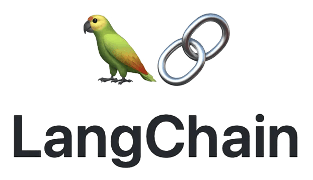
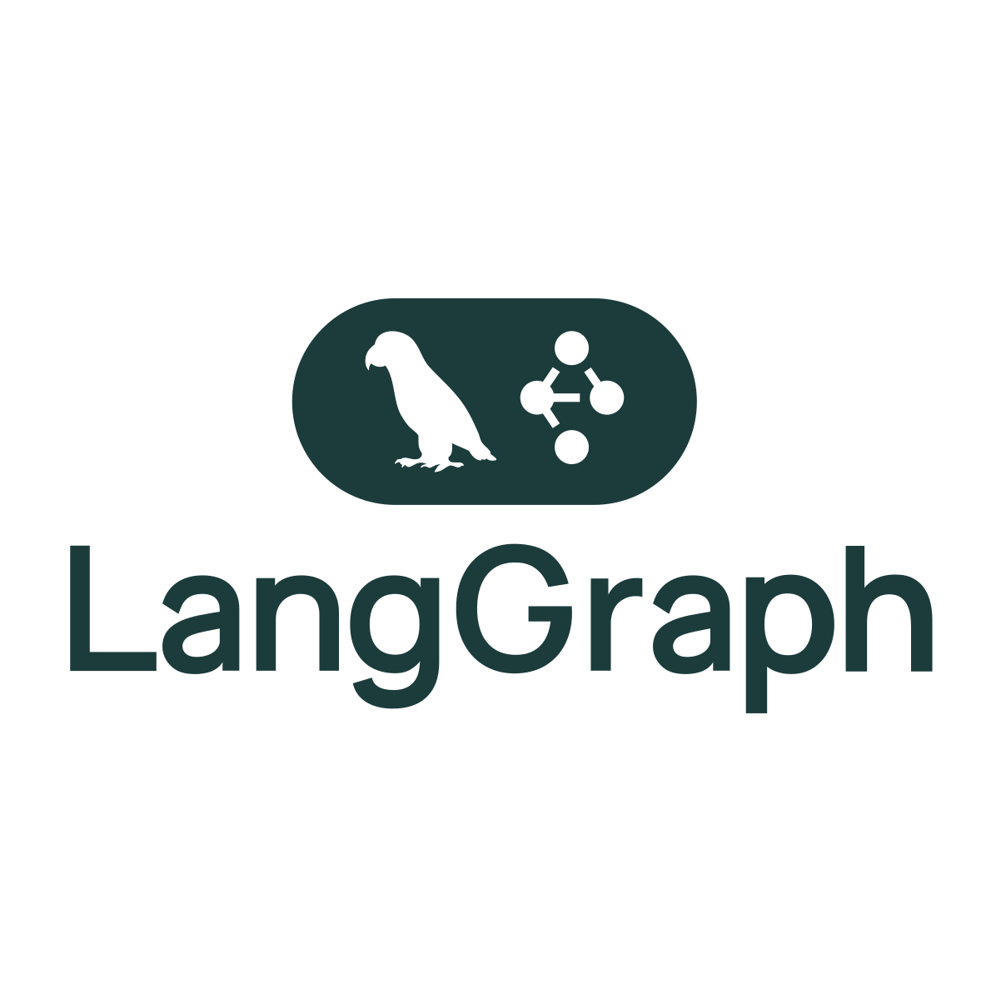
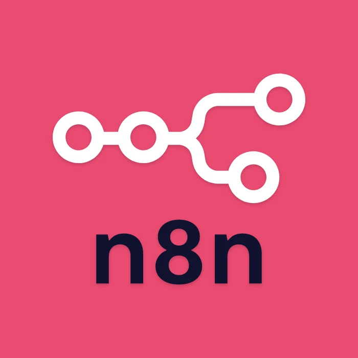

Sistemas Agénticos con Inteligencia Artificial
Transformando el desarrollo de software y su aplicación en la agricultura
2025-10-03
El momento ChatGPT: punto de inflexión
Antes de ChatGPT (noviembre 2022)
- IA para expertos técnicos e implementación compleja
- Adopción lenta en sectores tradicionales
Después de ChatGPT
- IA “accesible” para todos
- Interfaces conversacionales intuitivas
100 millones usuarios en 2 meses
Record histórico de adopción tecnológica

Oportunidades en agricultura
- Asistentes agronómicos inteligentes
- Diagnóstico conversacional de cultivos
- Planificación automatizada de siembras
Ecosistemas para construir agentes
- Open source y flexible
- Framework desarrollo agentes
- Orquestación de múltiples modelos
ADK (Agent Development Kit) Google
- Open source y flexible
- Optimizado para servicios de Google
- Sistemas multiagentes
- Herramientas prediseñadas
- Open source y flexible
- Optimizado para mayor velocidad de respuesta
- Herramientas prediseñadas
- Orquestación de múltiples modelos
- Open source y flexible
- Fácil para realizar fine tuning y entrenamiento de LLMs
- Orquestación de múltiples modelos
- Open source y flexible
- Drag-n-drop (arrastrar y soltar)
- Automatización flexible
- Agentes empresariales
- Integración Office 365
- No-code/low-code
- Agentes conversacionales especializados
- Integración con herramientas externas
- Marketplace de agentes




Herramientas para IA


¡Gracias!